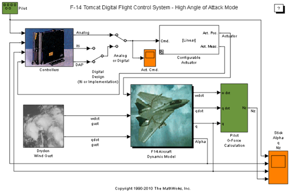
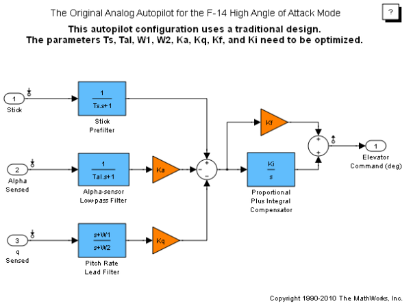
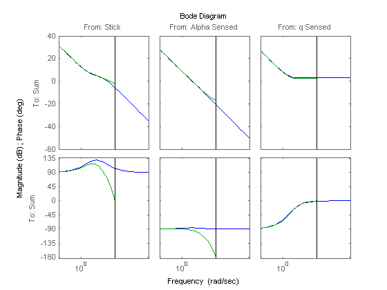
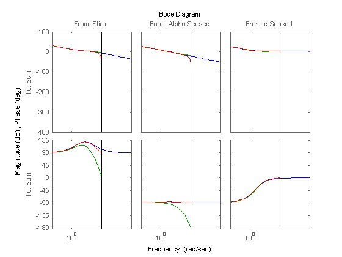
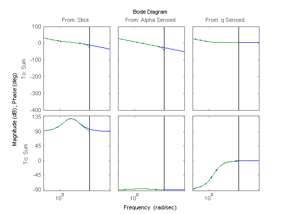
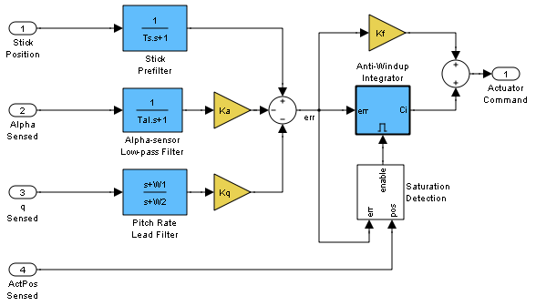
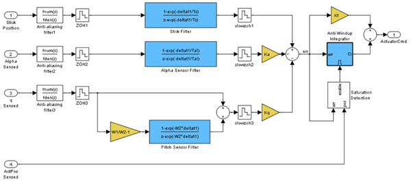
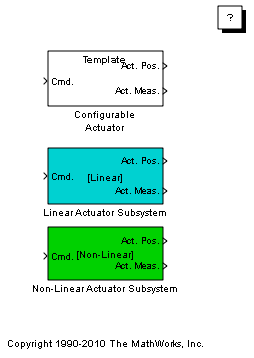
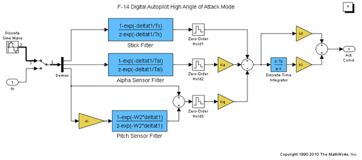
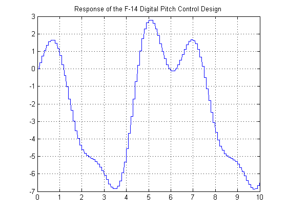

Designing an F-14 High Angle of Attack Pitch Mode Control
Contents
- Control Design Using Simulink®
- Trim and Linearization
- Linear Time-Invariant (LTI) Systems
- Discretized Controller Using Zero-Order Hold
- Tustin (Bilinear) Discretization
- Selecting a Sample Time
- Real-World Considerations
- Implementation of the Full Design
- Configurable Subsystems for Design Variants
- Code Generation
- Behavior of the First Pass Design
- Summary
Control Design Using Simulink®
This demonstration illustrates how to use the Control System Toolbox™ and Simulink® Control Design™ to interact with Simulink to design a digital pitch control for the U.S. Navy's F-14 Tomcat aircraft. In this example, we will design the controller to permit the aircraft to operate at a high angle of attack with minimal pilot workload.
Our example takes you through the first pass at designing a digital autopilot for a high angle of attack controller. To run everything in this demo you must have the Control System Toolbox, Simulink Control Design, Simulink, and Real-Time Workshop®. If you don't have all of these products, you can still run portions of the demo using cell execution mode of the MATLAB® editor.
Below is a Simulink model of the F-14. The control systems in the Controllers block can be switched in the model to allow you to see the analog response and then to switch to a design created using the Control System Toolbox's Linear Time Invariant (LTI) objects. A controller is also included that is a discrete implementation of the analog design that is similar to the algorithm that would go into an on-board flight computer. Take a few moments to explore the model.

Figure 1: Simulink model of the F-14 flight control system.
Trim and Linearization
The model can be linearized in the Control and Estimation Tools Manager launched from f14autopilot Simulink model. In the Tools menu, select Control Design > Linear Analysis.
When the Control and Estimation Tools Manager opens, select an operating point and click the Linearize Model button. An LTI Viewer can be created showing a step plot of the linearization. To browse around the LTI Viewer, right click on the graph window to see your options.
For help type help slcontrol or help ltiview or look at the Control System Toolbox and Simulink Control Design product documentation.
To view the linearized model parameters:
apmdl = 'f14autopilot'; open_system(apmdl) op = operpoint(apmdl); io = getlinio(apmdl); contap = linearize(apmdl,op,io)
a =
Alpha-sensor Pitch Rate L Proportional Stick Prefil
Alpha-sensor -2.526 0 0 0
Pitch Rate L 0 -4.144 0 0
Proportional -1.71 0.9567 0 10
Stick Prefil 0 0 0 -10
b =
Stick Alpha Sensed q Sensed
Alpha-sensor 0 1 0
Pitch Rate L 0 0 1
Proportional 0 0 -0.8156
Stick Prefil 1 0 0
c =
Alpha-sensor Pitch Rate L Proportional Stick Prefil
Sum 2.986 -1.67 -3.864 -17.46
d =
Stick Alpha Sensed q Sensed
Sum 0 0 1.424
Continuous-time model.
 Figure 2: Original analog autopilot.
Linear Time-Invariant (LTI) Systems
There are three types of LTI objects you can use to develop a linear model:
State Space (SS), Transfer Function (TF), and Zero-Pole-Gain (ZPG) objects.
The variable contap is a State Space object. You can then get one of the other types with the other commands. When you create the object in MATLAB, you can manipulate it using operations such as *, +, -, etc. This is called "overloading" the MATLAB operators. Try creating an object of your own and see what happens when adding, multiplying, etc. with the contap object.
To see exactly what is stored in the LTI object, type get(contap) or contap.InputName for example.
To view Zero/Pole/Gain transfer functions:
contap = tf(contap); contap = zpk(contap)
Zero/pole/gain from input "Stick" to output "Sum":
-17.46 (s+2.213)
----------------
s (s+10)
Zero/pole/gain from input "Alpha Sensed" to output "Sum":
2.9857 (s+2.213)
----------------
s (s+2.526)
Zero/pole/gain from input "q Sensed" to output "Sum":
1.424 (s+2.971) (s+2.213)
-------------------------
s (s+4.144)
Discretized Controller Using Zero-Order Hold
Now the LTI object will be used to design the digital autopilot that will replace the analog autopilot. The analog system is coded into the LTI object called contap (CONtinuous AutoPilot).
The first attempt at creating a digital autopilot will use a zero-order hold with a sample time of 0.1 seconds. Note that the discrete object maintains the type (ss, tf, or zpk).
It is clear from Bode plot below that the systems do not match in phase from 3 rad/sec to the half sample frequency (the vertical black line) for the pilot stick input and the angle of attack sensor. This design has poorer response than the analog system. Go to the Simulink model and start the simulation (make sure you can see the scope windows). While the simulation is running, double-click the manual switch labeled Analog or Digital.
Does the simulation verify the conclusion reached by interpreting the Bode diagram?
discap = c2d(contap, 0.1, 'zoh'); get(discap) bode(contap,discap)
z: {[0.8039] [0.8016] [2x1 double]}
p: {[2x1 double] [2x1 double] [2x1 double]}
k: [-1.2458 0.2943 1.4240]
DisplayFormat: 'roots'
Variable: 'z'
ioDelay: [0 0 0]
InputDelay: [3x1 double]
OutputDelay: 0
Ts: 0.1000
TimeUnit: ''
InputName: {3x1 cell}
InputUnit: {3x1 cell}
InputGroup: [1x1 struct]
OutputName: {'Sum'}
OutputUnit: {''}
OutputGroup: [1x1 struct]
Name: ''
Notes: {}
UserData: []
 Figure 3: Bode diagram comparing analog and ZOH controllers.
Tustin (Bilinear) Discretization
Now try different conversion techniques. You can use the Tustin transformation. In the command window type the commands above.
It should be clear that the systems still do not match in phase from 3 rad/sec to the half sample frequency, the Tustin transformation does better. The simulation uses the LTI object as it is designed. To see how the object is used look in the Controllers subsystem by using the browser or by double clicking the icon. The LTI block picks up an LTI object from the workspace. You can change the object name used in the block to any LTI object in the workspace.
Try using "discap1", the Tustin discretization of the analog design:
discap1 = c2d(contap,0.1,'tustin'); bode(contap,discap,discap1)
Figure 4: Bode diagram comparing analog and 0.1 sec Tustin controllers.
Selecting a Sample Time
The Tustin transform performs better than the zero-order hold from the analysis so far. The sample time of 0.1 second appears to be too slow for the discrete system to track the performance of the analog system at half the sample frequency.
Now transform the analog design using the Tustin transform with a 0.05 second sample period:
discap = c2d(contap,0.05,'tustin') bode(contap,discap)
Zero/pole/gain from input "Stick" to output "Sum":
-0.36852 (z-0.8951) (z+1)
-------------------------
(z-1) (z-0.6)
Zero/pole/gain from input "Alpha Sensed" to output "Sum":
0.074094 (z-0.8951) (z+1)
-------------------------
(z-1) (z-0.8812)
Zero/pole/gain from input "q Sensed" to output "Sum":
1.4629 (z-0.8617) (z-0.8951)
----------------------------
(z-1) (z-0.8123)
Sampling time: 0.05
 Figure 5: Bode diagram comparing analog and 0.05 sec Tustin controllers.
Real-World Considerations
Now that we have what appears to be a workable design, we need to implement it in a form that will include some of the necessary elements that were ignored in the linear analysis. For example, if you look at the analog autopilot that is in the Controllers subsystem, you will see some logic that stops the integrator from winding up when the actuator saturates:
Open the AnalogControl subsystem
Figure 6: AnalogControl subsystem.
Implementation of the Full Design
The integrator wind-up is only one of the practical issues that needs to be addressed. Another is the need to eliminate aliased high frequency signals that could enter at measurement points. These aliased signals can be prevented by specifying analog filters in front of the sample and hold (ZOH) blocks that model the analog-to-digital converter (ADC) devices typically used for measuring signals in an embedded application. Additionally, the filters in the digital section of the autopilot operate at a higher sampling rate than the compensator to provide a conditioned signal to the compensator. The analog filters are necessary because once a signal is aliased, there is no way to separate the valid in-band frequency content from aliased content.
This new controller is called Digital Control. The filters have a sample time of deltat1 (set to be 1/10 of deltat). The zero-order hold blocks specify these sample times for various downstream blocks through sample time inheritance.
The switches in the f14_digital model are set up so you can switch between the analog autopilot, the digital LTI object, and the digital autopilot that could be implemented using software.
Try simulating the system again and switch among the three autopilot designs. You should see that the designs are not significantly affected by which autopilot is active. You can also increase the amplitude of the wind gust and verify that the anti-aliasing filters are working satisfactorily. To increase the gust amplitude, open the Dryden Wind Gust subsystem and change (by double clicking the icon) the noise variance of the White Noise that drives the gust simulation.
Open the DigitalControl subsystem:
Figure 7: DigitalControl subsystem.
Configurable Subsystems for Design Variants
The actuators in the Simulink model use a feature of Simulink called Configurable Subsystems to access a library of actuators. This library was opened by the command shown in the window above.
To make the simulation change, use the nonlinear actuator instead of the linear one, double click the actuator block in the f14_digital model, and follow the instructions.
Note that Simulink must be stopped in order to reconfigure the actuator selection. You should also note that the nonlinear actuator has saturations on position and rate.
Figure 8: The f14actuator model.
Code Generation
The autopilot design can be transformed into embeddable code using Real-Time Workshop. A separate model of the digital autopilot, f14_dap, is open below; it was coded into a host-based standalone program using Real-Time Workshop and the compiler specified using the mex -setup configuration. The simulation results can be used as a validation baseline for the functional correctness of the generated code.
The executable file resulting from code generation and compilation is f14_dap.exe. If you create it, it can be run from the OS shell (DOS) command line directly or from MATLAB by typing:
>> !f14_dap.exe
The executable program creates a file called f14_dap.mat that you can load by typing load f14_dap.
Two variables called rt_tout and rt_yout will be in the workspace and their variance against the simulation baseline can be plotted. Note that the variance is effectively zero for this model on this host. Some small numeric variance is to be expected in more complex calculations due to differing compiler optimizations and use of intermediate register variables having higher precision than the 64-bit storage format of a double. Significant variances should be examined as they could indicate a numerical stability problem in your model's algorithms, a compiler or run-time library bug, or other problems.

Figure 9: Comparison of simulation and code generation results.
Behavior of the First Pass Design
Here is the time response of the high angle of attack mode digital pitch controller design:
Figure 10: Response of the F-14 Digital Pitch Control Design.
Summary
Further work on this design might include incorporating and analyzing more of the real-world effects on the compensator such as the effect of the anti-aliasing filter dynamics and computational delay of the embedded digital computer on the overall "plant" seen by the digital computations. The combination of the real plant, the computational delay, the anti-aliasing filters, and the sample-and-hold delay are just a few of the additional items that might affect the design of the digital compensator parameters.